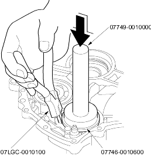
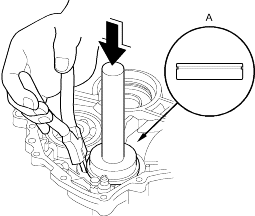
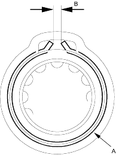

- Snap ring pliers, 07LGC-0010100
- Handle driver, 07749-0010000
- Driver attachment, 72 x 75 mm, 07746-0010600
NOTE: Coat all parts with ATF before assembly.
- To remove the driven pulley shaft bearing from the transmission housing, expand the snap ring with the special tool, then push the bearing out.
NOTE: Do not remove the snap ring unless it's necessary to clean the groove in the housing.

- Install the bearing (A) in the direction shown.

- Expand the snap ring with the special tool and install the bearing part-way into the housing.
- Release the pliers, then push the bearing down into the housing until the snap ring snaps in place around it.
- After installing the bearing verify that the snap ring (A) is seated in the bearing and housing grooves and that the ring end gap (B) is correct.
